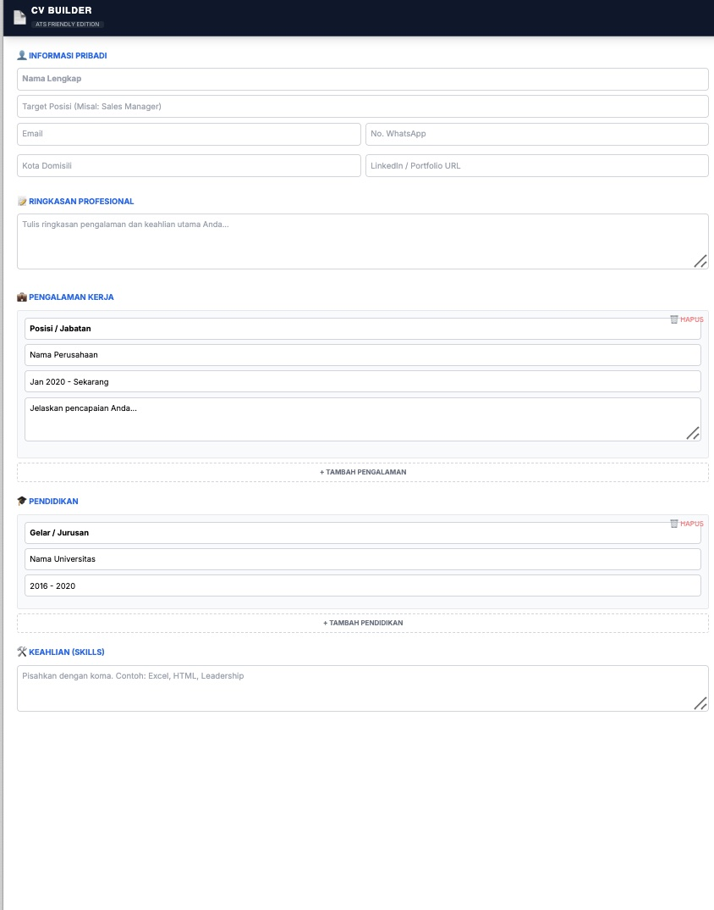

Layout Bersih & Profesional
Fokus pada konten, bukan hiasan. Desain minimalis yang disukai HRD karena mudah dibaca dalam waktu kurang dari 6 detik.
Smart Editor

Hasil PDF (A4)

Mobile Friendly

Jangan biarkan keahlian Anda terbuang karena format CV yang salah. Gunakan standar internasional yang bersih, rapi, dan mudah dibaca sistem perusahaan global.
Investasi Karir Masa Depan
✅ Lolos Mesin ATS ✅ Auto-Formatting ✅ PDF High Quality
Fokus pada konten, bukan hiasan. Desain minimalis yang disukai HRD karena mudah dibaca dalam waktu kurang dari 6 detik.
Kode HTML bersih yang mudah dibaca robot ATS (Applicant Tracking System). Jangan biarkan CV Anda ditolak sistem sebelum dibaca manusia.
Apa yang Anda ketik, langsung muncul di layar preview. Tidak perlu refresh atau tebak-tebakan hasil akhir.
[cite_start]Sistem otomatis merapikan poin pengalaman kerja Anda[cite: 140]. Struktur yang rapi sangat disukai oleh rekruter.
ATS CV Builder Pro
✅ LOLOS SCREENING & AMAN
Klik file HTML di browser Chrome Laptop atau HP[cite: 135].
Lengkapi data diri, pengalaman kerja, dan pendidikan[cite: 136, 137].
Masukkan keahlian (pisahkan dengan koma) agar rapi[cite: 141].
Simpan sebagai PDF (A4). Siap kirim ke perusahaan[cite: 147].
Investasi kecil untuk lompatan karir yang besar.
Tanpa langganan bulanan yang memberatkan pencari kerja.
Akses selamanya. Garansi 100%.